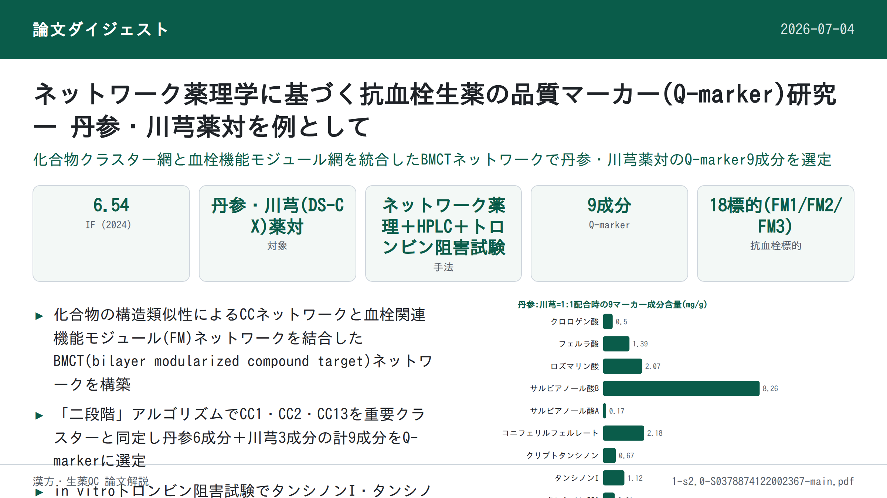
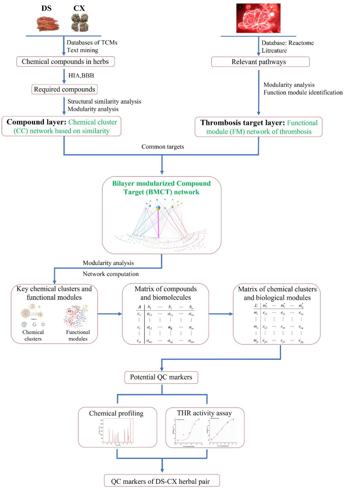
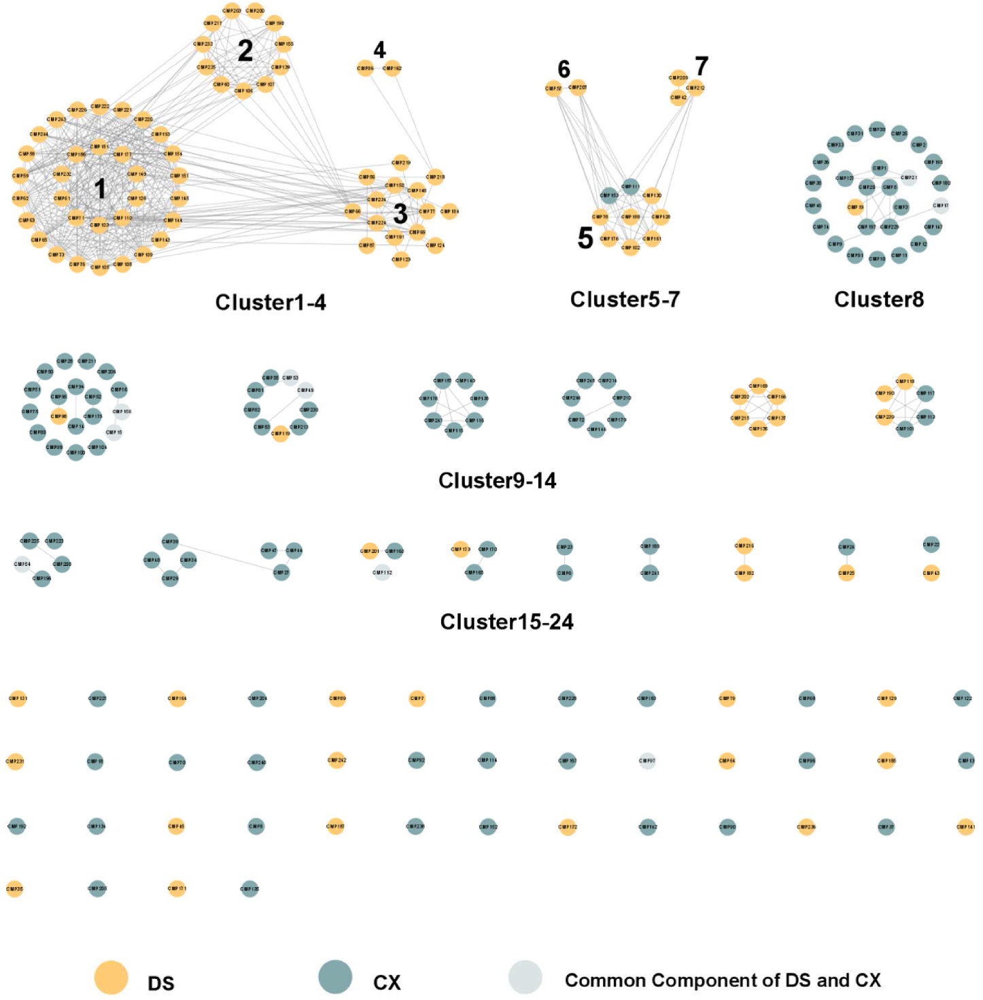
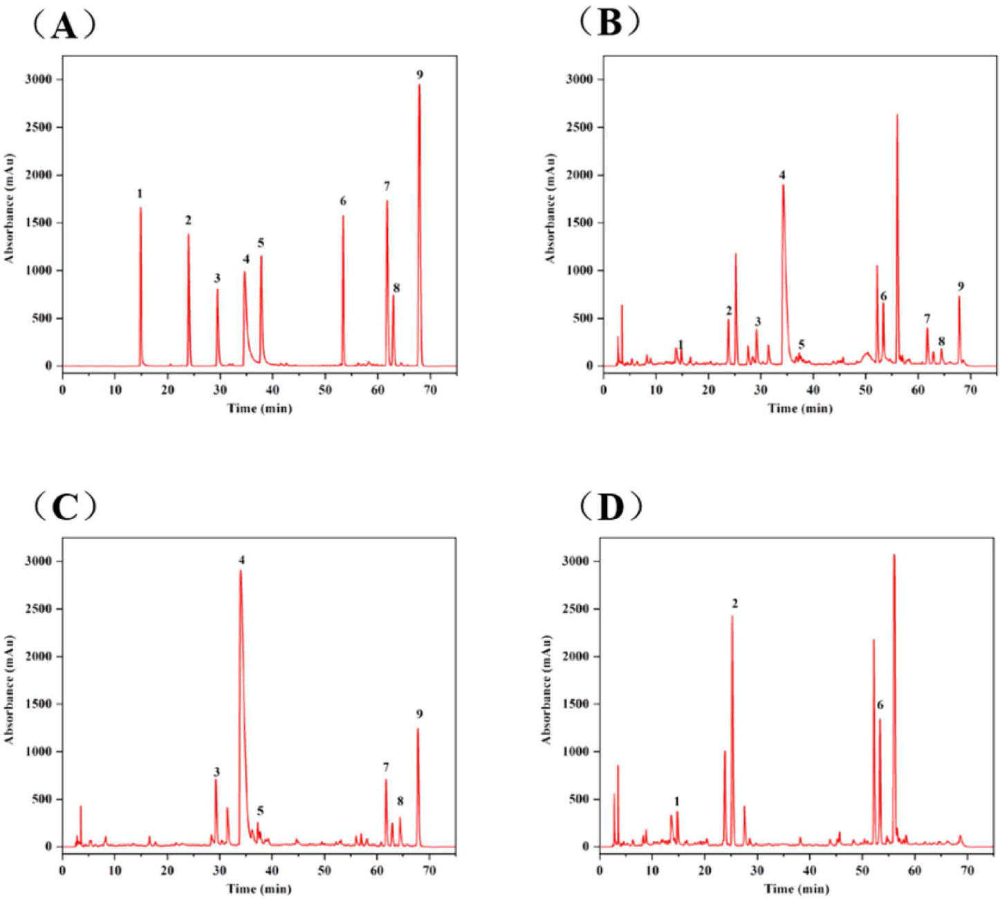

ネットワーク薬理学に基づく抗血栓生薬の品質マーカー(Q-marker)研究 — 丹参・川芎薬対を例として

<!-- 方針: ほぼ全訳＋必要に応じた補足。原文構成に沿って訳出。「> 補足:」は訳者注。 -->
書誌情報
- 標題（原題）: A network pharmacology-based study on the quality control markers of antithrombotic herbs: Using Salvia miltiorrhiza - Ligusticum chuanxiong as an example
- 著者・所属: Dai-Yan Zhang, Ruo-Qian Peng（共同筆頭）, Xu Wang, Hua-Li Zuo, Li-Yang Lyu, Feng-Qing Yang（責任著者）, Yuan-Jia Hu（責任著者）／マカオ大学中医薬科学研究院 中薬品質研究国家重点実験室、マカオ大学健康科学部、香港中文大学（深圳）生命健康学院・Warshel計算生物学研究所、重慶大学化学化工学院
- 掲載誌・巻号・DOI: Journal of Ethnopharmacology 292 (2022) 115197. https://doi.org/10.1016/j.jep.2022.115197
- インパクトファクター: 6.54（Journal of Ethnopharmacology, JCR 2024 / Clarivate）
- 受理経過 / ライセンス: 2022年1月16日受付、2月20日改訂、3月11日受理、3月21日オンライン公開。CC BY-NC-ND 4.0（オープンアクセス）。
補足: 略語一覧（原文Abbreviationsより）— BBB: 血液脳関門、CC: 化合物クラスター(compound cluster)、CVD: 心血管疾患、BMCT network: bilayer modularized compound target network（二層モジュール化・化合物-標的ネットワーク）、CX: 川芎(Chuanxiong)、DS: 丹参(Danshen)、FM: 機能モジュール(functional module)、HIA: ヒト腸管吸収性、PBS: リン酸緩衝生理食塩水、QC: 品質管理、TCM: 中医学（伝統中国医学）、THR: トロンビン(Thrombin)。
要旨（Abstract）
民族薬理学的関連性: 丹参（Danshen, DS、Salvia miltiorrhiza Bungeの乾燥根及び根茎）と川芎（Chuanxiong, CX、Ligusticum striatum DCの乾燥根茎）は、血行促進・瘀血除去に効果があり、心血管疾患(CVD)と深く関連する。
研究目的: 活性に基づく化学マーカーの同定は非常に重要であるが、中医学(TCM)における「多成分・多標的・多効果」という複雑な機序がこの作業に大きな課題を課している。本研究では、全体の複雑系と単一成分との間の中間層「モジュール／クラスター」を明確化することにより抗血栓生薬の品質管理(QC)マーカーを発見する有効な手法を探るため、ネットワーク薬理学的予測とDS・CXの実験的検証を組み合わせた。
材料と方法: 化合物の構造類似性解析と、既発表の血栓症ネットワークに基づき、まず化合物クラスター(CC)ネットワークと機能モジュール(FM)ネットワークという2つの層をそれぞれモジュール化し、これらを1つの二層モジュール化・化合物-標的(BMCT)ネットワークとして連結した。CCから潜在的QCマーカーとなる重要な化合物を同定するために「二段階」計算を適用した。選定したQCマーカー化合物のin vitroトロンビン阻害活性を評価し、その薬理活性を部分的に検証した。含量測定にはHPLCを用いた。
結果: ネットワークに基づく解析の結果、BMCTネットワークにおいて重要性の高い9成分がDS-CXのQCマーカーとして同定された：タンシノンI、タンシノンIIA、クリプトタンシノン、サルビアノール酸B、フェルラ酸、サルビアノール酸A、ロズマリン酸、クロロゲン酸、コニフェリルフェルレート。酵素阻害試験により、タンシノンIとタンシノンIIAの活性が部分的に検証された。化学プロファイリングにより、これら9つのマーカー化合物が当該薬対における主要成分であることが示された。
結論: 本研究はDS-CX薬対の活性に基づくQCマーカーを同定し、他の生薬・薬対・方剤のQCにも応用できる新しい方法論を提供した。
1. 序論（Introduction）
中医学(TCM)の品質管理(QC)には、安全性と有効性を確保するための厳格で明確なルールが必要である(Wu et al., 2018)。活性に基づく化学マーカーの同定は非常に重要であるが、TCMにおける「多成分・多標的・多効果」という複雑な機序がこの作業に大きな課題を課している(Zhang et al., 2016)。具体的には、QCマーカーの発見と同定は主に系統的な化学分離に依存し、その後多数の薬理活性アッセイの開発とバイオアッセイ誘導型の化学分離が続く(Zhang, X. et al., 2017)。しかし、成分の多様性、分離・スクリーニングプロセスの困難さ、機序の複雑さから、有効成分の同定は常にTCM研究のボトルネックであった(Yu et al., 2010)。TCMの複雑な性質と煩雑な実験が、QC指標を見出す新手法の登場を求めている。
このTCMのQCマーカーに関するジレンマに直面し、全体の複雑系と単一成分の間の中間層「モジュール／クラスター」を明確化することが問題解決の助けになるかもしれない。「モジュール／クラスター」は全体のサブグループであるが、類似の性質を持つ化合物または標的を統合するものである。TCMでは、この全体性を「モジュール／クラスター」で反映するいくつかの概念が提唱されてきた。「軍団(army group)」効果(Shaoqing et al., 2015)、生物活性等価組合せ成分(bioactive equivalent combinatorial components)(Liu et al., 2014)、カニスター理論(Canister theory)(Meng et al., 2000)などである。TCMのQCに対応して、疾患モジュールに寄与する化合物のクラスターを同定することは、活性に基づく化合物の探索とQCマーカーの範囲の絞り込みに大きく役立つ。しかし、「モジュール／クラスター」概念を含む複雑なTCM生物学的データは、データ解析・統合にとって課題である。ネットワーク薬理学はこの状況に対処する有効なツールであり、特殊な視覚的解析能力と多次元データ統合能力を通じて中医薬の品質管理マーカーを探索する新しいアプローチを提供する。
最小構成単位として、薬対(herbal pair)は方剤の薬効を反映しつつ、構成の単純さが研究を容易にする(Wang et al., 2012)。本研究では、抗血栓効果と広い普及度を持ちながら既存のQCマーカーに改善の余地がある薬対、丹参(Danshen, DS、Salvia miltiorrhiza Bungeの乾燥根及び根茎)と川芎(Chuanxiong, CX、Ligusticum striatum DCの乾燥根茎)を例として上記手法を検討した。DSとCXは血行促進・瘀血除去により心血管疾患(CVD)関連疾患の治療に広く用いられている(Chen et al., 2018b; Cheng, 2007)。中国中医薬協会が2019年に発表したベストセラー中成薬に関する公式報告によれば、両者は最も頻用される薬対を構成している(Geng et al., 2020)。DSとCXは米国、日本、オーストラリア、韓国、オランダなどでも広く用いられている(Chen et al., 2018b; Cheng, 2006, 2007; McEwen, 2015)。しかし、既存の品質マーカーはその複雑な性質を完全には反映していない可能性がある。中国薬局方（2020年版）では、DSのQC規格は（HPLCで測定した）タンシノンIIA・クリプトタンシノン・タンシノンIの総含量が0.25%以上、サルビアノール酸Bの含量が3.0%以上とされ、CXのQC規格はフェルラ酸含量が0.10%以上とされている。一方、DS-CXは多くの中成薬方剤に用いられている。中国薬局方の記載によれば、サルビアノール酸Bは精制冠心口服液/顆粒、脳脈丸/片/胶囊、保心片のQCマーカーとして、サルビアノール酸Bとタンシノン IIAは精制冠心片/软胶囊のQCマーカーとして、丹参素は心寧片のQCマーカーとして用いられている。生薬・関連製品のQCマーカーとして使用されている化学成分はごく僅かである。QCマーカーの不備、CVDに対する顕著な有効性、臨床における広範な応用は、ネットワーク薬理学的手法のQCマーカーへの応用を検討する良い研究対象たらしめている。
このような背景から、本研究はネットワーク薬理学的手法と実験を組み合わせ、DS-CX薬対の潜在的QCマーカーを探索することを目的とする。化合物の構造類似性解析と既発表の血栓症ネットワーク(Kong et al., 2015)に基づき、まず化合物クラスター(CC)ネットワークと血栓症の機能モジュール(FM)ネットワークという2つの層をそれぞれモジュール化し、これらを1つの二層モジュール化・化合物-標的(BMCT)ネットワークとして連結した。化学物質-標的間の相互作用とモジュール／クラスター分割を組み合わせ、異なるCCとFMの累積スコアを計算し、どのCCが特定機能を担うかを比較した。有意なスコアを持つCCに絞り込むことで、さらに特異的な化合物を同定した。選定したQCマーカーのin vitroトロンビン阻害活性を評価し、その薬理活性を部分的に検証した。本研究の研究フレームワークをFig. 1に示す。

2. 材料と方法（Materials and Methods）
2.1. データマイニングと処理
2.1.1. 化合物の収集と処理
DSとCXの化合物情報は、文献および3つの化学データベース：中薬系統薬理学データベース(TCMSP, Ru et al., 2014, http://tcmspw.com/tcmsp.php)、中薬統合データベース(TCMID, Huang et al., 2018, http://www.megabionet.org/tcmid/)、中国科学院上海有機化学研究所化学データベース(http://www.organchem.csdb.cn)から収集した。トレオニンやフルクトースなどの一般的アミノ酸・単糖類は本研究から除外した。PubChem(Kim et al., 2019, http://pubchem.ncbi.nlm.nih.gov)を用いて化合物を標準化し、PubChem CIDや標準SMILES情報などの関連化学データを補完した。さらに、ヒト腸管吸収性(HIA)と血液脳関門(BBB)透過性をadmetSAR(Yang et al., 2019, http://lmmd.ecust.edu.cn/admetsar2)から収集し、一次スクリーニングに用いた。HIAまたはBBBが陰性の化合物は除外した。ただし、文献と組み合わせた結果、顕著な薬理活性を持つ一部の化合物がスクリーニングで除外されていたことが判明し、予測プラットフォームの偽陰性の可能性を考慮して、これらの化合物を研究に組み入れ直した。
2.1.2. 標的の収集と処理
DS・CX薬対の標的は、TCMSP、PubChem、類似性アンサンブル解析(SEA, Keiser et al., 2007, http://sea.bkslab.org/)の3つのソースから取得した。TCMSPについては「関連標的」情報を収集した。PubChemについては「活性(active)」ラベルの付いた「バイオアッセイ結果」の情報を採用した。同時に、実験研究の限界を補うため、SEAによる仮想予測を追加データとして用いた。SEAから得た標的のうち、偽発見率<0.05かつmaxTc≥0.57を満たすものをデータセットに残した。データベースUniProt(Consortium, 2018, https://www.uniprot.org/)を用いて標的の遺伝子名を標準化した。
2.2. ネットワークの構築
2.2.1. CCネットワークの構築
本研究では、化合物は構造類似性に基づいてCCネットワークを形成した。RStudio上で動作するChemmineRツールキット(Yiqun et al., 2008)を用いて、化合物間でタニモト係数≥0.6(Delaney, 1996)を基準とするアトムペアフィンガープリントベースの化合物類似性検索を実施した。化合物類似性相互マトリクスを取得後、Cytoscape 3.8.0(Shannon et al., 2003)を用いて化合物構造類似性ネットワークを構築・可視化した。さらに、位相学的パラメータを抽出した。異なる母骨格を持つモジュール化ネットワークを得るために、MCODE1.6.1プラグイン(Bader and Hogue, 2003)を用いてネットワークを異なるクラスターに分割した。各クラスターが同一の母骨格を持つことを確認するため、分類結果は手動で確認した。
2.2.2. FMネットワークの構築
抗血栓効果に標的を絞り込むため、本研究ではKong et al.(2015)の血栓症ネットワークを参照し、本研究におけるFMネットワークとした。先行研究では、血栓症ネットワークの標的情報はReactomeデータベースおよび文献に基づき、経路と反応情報を、凝固カスケード(FM1)、フィブリン塊の溶解(FM2)、血小板活性化・シグナル伝達・凝集(FM3)という3つの異なるFMに分けたものであった。このネットワークにおいて、ノードは血栓形成過程に関与するタンパク質またはタンパク質複合体を意味する。一部のタンパク質複合体は複数の遺伝子によりコードされている場合がある。化合物の標的と対応させるため、血栓症ネットワークのタンパク質／タンパク質複合体を単一の標的に分割し、さらなる比較に用いた。
2.2.3. BMCTネットワークの構築
BMCTネットワークは、生薬化合物のCCネットワークと血栓症に関連するFMネットワークから構成される二層ネットワークである。化合物とその標的間の相互作用、および血栓症ネットワーク中のタンパク質を組み合わせることで、2つのモジュール化ネットワークを接続しBMCTネットワークを形成した。
2.3. ネットワーク解析
文献および我々の先行研究から、生薬または生物学的ネットワークは通常、スモールワールドの特徴を持つ非ランダムなスケールフリーネットワークである(Zhang, Q. et al., 2017; Zhang et al., 2019; Zuo et al., 2018)。すなわち、化学ネットワーク中の化合物や生物学的ネットワーク中の生体分子は、同一に扱われるべきではない。したがって、化合物と標的の重みは標準化されたネットワークパラメータに基づいて設定された。化学層では、まずクラスター化されたノードの次数中心性、媒介中心性、近接中心性を標準化した。式(1)は、xを標準化した値x*を示し、xはネットワークパラメータを表す。次に、3つの標準化データの平均をw(ci)と定義した。個々のノードは1つのクラスターとみなされ、その重みは「1」に設定された。血栓症ネットワークのノードは単一タンパク質またはタンパク質複合体を表し、その重みw(bj)はw(ci)と同じ方法で計算された。
x\* = log₁₀(x + 1) / log₁₀(x_max + 1) …… 式(1)
重み計算後、化合物と標的、およびCCとFM間の連結強度を明確化するためのアルゴリズムが提案された。以下の2種類のマトリクスを用いて明確に表現した。まず、化合物と標的の間の重み付き関係の測定を示す(Fig. 2参照)。ここでaij∈{0,1}であり、aij=1は化合物ciが標的bjに関連することを、0は関連がないことを示す。式(2)は、化合物ciと標的bj間の連結強度dijの計算方法を示す。式(2)において、w(ci)とw(bj)はさらに式(1)により標準化され、次元効果を排除する。
dij = w(ci)・aij + w(bj)・aij …… 式(2)
ここでw(ci)は化学ネットワークにおける化合物ciの重みを、w(bj)は生物学的ネットワークにおける標的bjの重みを表す。
さらに、TCMの本質的な性質と全体的な特性を反映するため、TCMの化学的・生物学的クラスタリング特性が考慮された。グラフ表現の観点からは、化学ネットワークと生物学的ネットワークは、それぞれ構造類似性を持つ化合物と機能が類似する生体分子を統合することでモジュール／クラスターに基づくネットワークへと縮約できる。マトリクス表現の観点からは、同質な行および列を統合できる。マトリクスAm×nは、以下のFig. 3に示すマトリクスEp×qに変換された。式(3)にその計算式を示す。
euv = Σdij = Σ(ci∈mu, bj∈m*v) [w(ci)・aij + w(bj)・aij] …… 式(3)
ここでeuvはmuとm*v間の関連性を測定するために用いられ、euvはdijの総和に等しい。
行列Ep×qで示される化学モジュールと生物学的モジュールの関係について、マーカーを同定するために式(4)に示す二段階の解法を用いた。argmaxは関連関数の定義域における、関数値が最大となる点を表す。第一段階では、{P(mv)、v=1,…,q}集合、すなわちmvを規制するCCの組合せを、最も強い連結、すなわち最も高いeuvの値で同定した。有意なCCをスクリーニングした後、第二段階として、潜在的QCマーカーを特定した。Q(mv)をmvを担う潜在的QCマーカーとする。Q(mv)は本研究における関連する制限条件を満たす複数のciであった。{Q(mv)、v=1,…,q}集合は、それぞれ異なる関連生体分子を規制するQCマーカーの組合せであった。最終的に、w(ci)の値が最も高い潜在的QCマーカーを得た。血栓症の複雑性と生物学的ネットワークにおけるスモールワールドの特性を鑑みると、この種の生体分子モジュールに基づく戦略はQCマーカーの同定に妥当であった。
2.4. 試薬と材料
標準品であるクロロゲン酸、フェルラ酸、ロズマリン酸、サルビアノール酸B、サルビアノール酸A、コニフェリルフェルレート、クリプトタンシノン、タンシノンI、タンシノンIIA（いずれもHPLCで測定した純度≥98%）はPurechem-standard Co., Ltd.（中国・成都）から購入した。トロンビンはSigma-Aldrich（米国・セントルイス）から購入した。基質S-2238（HPLCで測定した純度≥99%）はAdhoc International Technology Co., Ltd.（中国・北京）から入手した。アルガトロバンはHuazhong Haiwei Gene Technology Co., Ltd.（中国・北京）から購入した。HPLCグレードのアセトニトリルとメタノールは、それぞれ上海泰坦科技股份有限公司（中国・上海）とInnochem Science & Technology Co., Ltd.（中国・北京）から購入した。エタノールはChron Chemicals Co., Ltd.（中国・成都）から入手した。実験に使用した水はすべて水精製システム（ATSelem, 1820A, Antesheng Environmental Protection Equipment、中国・重慶）で精製した。
DSとCXの生薬は2020年5月にKangmei Pharmaceutical Co., Ltd.から購入した。産地はそれぞれ山東省と四川省である。丹参（標本番号SM2020050101）と川芎（標本番号CF2020050101）のボウチャー標本は、重慶大学化学化工学院製薬工学実験室に保管されている。
2.5. 試料溶液の調製
標準品を精密に秤量し、メタノールに溶解して、サルビアノール酸B(1600.0 μg/mL)、タンシノンIIA(600.0 μg/mL)、コニフェリルフェルレート・クロロゲン酸・フェルラ酸・ロズマリン酸・サルビアノール酸A・クリプトタンシノン・タンシノンI（各400.0 μg/mL）の濃度で標準品溶液を調製し、使用前は4℃で保存した。
DSとCXの生薬は粉砕し、50メッシュふるい（約0.29 mm）でろ過後、乾燥箱に保存した。DC薬対の異なる配合比11種（1:0、1:1、2:1、3:1、2:3、3:4、4:3、3:2、1:3、1:2、0:1）を超音波抽出法によりそれぞれ調製した。まず、DSとCXの混合粉末2.0 gを250 mL丸底フラスコ中で70%エタノール20 mLに分散させた。次に、約25℃の超音波洗浄機で30分間抽出した。上記の操作を2回繰り返した。抽出液をろ過・合一し、遠心分離（4℃、2504×g）を10分間行った。上清を回収し、さらに0.22 μmメンブレンフィルター（上海泰坦科技股份有限公司、中国・上海）でろ過してから分析に供した。
2.6. HPLC分析
HPLC分析はAgilent 1260シリーズ液体クロマトグラフシステム（Agilent Technologies、米国パロアルト）を用い、フォトダイオードアレイ検出器(DAD)を装備し、Agilent ChemStationソフトウェアで制御した。クロマトグラフィー分離は、ガードカラム（12.5 mm×4.6 mm、5 μm）を前置したAgilent ZORBAX SB-Aqカラム（250 mm×4.6 mm、5 μm）を用い、カラム温度35℃で行った。移動相は0.1%酢酸水溶液(A)とアセトニトリル(B)からなり、流速1 mL/minとした。グラジエントプログラムは以下の通り：0–2 min、5% B；2–10 min、5–15% B；10–24 min、15–22% B；24–35 min、22–29% B；35–42 min、29–37% B；42–60 min、37–60% B；60–62 min、60–5% B；62–70 min、5% B。全試料の注入量は10 μLとした。
2.7. THR（トロンビン）阻害活性アッセイ
PBS(リン酸緩衝生理食塩水)緩衝液は、Na₂HPO₄ 1.44 gとKH₂PO₄ 0.24 gを水800 mLに溶解して調製し（1.0 M NaOHでpHを8.0に調整）、すぐに使用した。THRストック溶液(125 U/mL)はTHR 4.16 mgをPBS 1.0 mLに溶解して調製した。S-2238(2.0 mg/mL)、アルガトロバン(0.8 mM)、標準品(5.0 mM)のストック溶液をそれぞれPBS緩衝液で調製した。アルガトロバンおよび標準品溶液は、使用前にPBSでそれぞれ所望の濃度に希釈した。THR阻害活性アッセイはiMark™ Microplate Absorbance Reader（Bio-Rad Laboratories, Inc.、米国）で実施した。アルガトロバンまたは標準品溶液50 μLとTHR溶液50 μLを混合し、37℃で10分間インキュベートした。続いて、発色基質としてS-2238(2.0 mg/mL) 100 μLを加え、マイクロプレートリーダーで反応を開始した。吸光度は405 nmで10分間、30秒ごとにモニタリングし、各群を3回測定した。対照群では、標準品溶液の代わりにPBS緩衝液を用いた。THRの阻害率(%)は以下の式(5)により算出した。
I(%) = [(dA/dt)blank − (dA/dt)sample] / (dA/dt)blank …… 式(5)
ここでI(%)は阻害率(%)を表し、(dA/dt)blankと(dA/dt)sampleはそれぞれ対照群と実験群の反応速度を表す。結果は3回の実験の平均値±標準偏差で示した。
3. 結果（Results）
3.1. CCネットワーク
DS-CXのCCネットワークは227ノード・471エッジで構成された（Fig. 4参照）。構造活性相関の理論によれば、類似の構造を持つ化合物は類似の生物学的活性を発揮する傾向があり、異なるCCは異なる生物学的機能を生み出す可能性がある(Ma et al., 2015)。MCODEによるモジュール処理と手動検証の結果、24のCCが同定された。化合物情報についてはTable S1（補足資料）を参照。

3.2. FMネットワーク
FMネットワークにおいて、ノードは血栓症に関連する単一タンパク質／タンパク質複合体を表す。DS-CXの抗血栓標的を同定するため、血栓症ネットワークの149のタンパク質／タンパク質複合体を137標的に分割した（Table S2）。例えば、プロトロンビナーゼはF5とF10に分割され、プロトロンビンはF2に対応した。さらに、血栓症ネットワークは3つの独立したFMと2つの交差FMに分割された。
137の抗血栓標的とDS-CXの405標的を重ね合わせたところ、AKT1、F2、F3、F7、F10、FYN、GNAI1、ITGA2B、ITGB3、LCK、MAPK1、MAPK11、MAPK14、MAPK3、PIK3CG、PLAU、PTPN1、SRCを含む18標的が、血栓症ネットワークにおけるDS-CXの抗血栓標的として見出された。これら18標的は27のタンパク質／タンパク質複合体に分布していた。
3.3. BMCTネットワーク
BMCTネットワークは、構造類似性でクラスター化された化学ネットワークと、機能に基づく生物学的ネットワークから構成される。CCネットワークは450エッジ・155ノードから構成された。第一段階の計算（最適なCCの選定）結果を明確に可視化するため、全化合物を10個の非クラスター化合物と、生物学的層を直接規制する12のCC（CC1、CC2、CC3、CC5、CC7、CC8、CC9、CC10、CC13、CC14、CC23、CC24）に分けた。
標的層は149タンパク質・414関係から構成され、異なる色を持つ5つのFMに分割された。27のタンパク質／タンパク質複合体がDS-CX薬対によって直接影響を受け、そのうちFM1に8個、FM2に2個、FM3に16個、FM1&3に1個が分布した。化合物-標的の結合に応じて176の連結が同定され、そのうち83がFM1に、8がFM2に、53がFM3に、32がFM1&3に属した。
BMCTネットワークの全体図はFig. S1（補足資料）に示す。ネットワークがあまりに多くの要素（化合物・標的とそれぞれのモジュール特性）を含むため、ネットワーク全体が非常に煩雑に見え、「モジュール／クラスター」特性の表現にも適していなかった。特にCCは10グループ以上あった。そこで、クラスター特性に基づき化合物層のネットワークを統合した。Fig. 5に示すように、化学層ではノードが化合物クラスターを示し、ネットワークが簡潔になると同時に、DS-CXの異なる化合物クラスターが担う主要な生物学的機能が明確に示された。

3.4. ネットワーク解析
方法の項で述べた「二段階」解法に従い、まず抗血栓標的を直接規制する12の化学モジュールと血栓症ネットワークFMとの連結強度を計算した（Table 1参照）。FM1&2はDS-CXにより規制されていないため、ここには示していない。Table 1が示す通り、CC1、CC2、CC13は他のCCよりも生物学的FMの規制における連結強度が高かった。
Table 1. CCとFM間の連結強度
| CC | FM1 | FM2 | FM3 | FM1&3 | 合計 |
|---|---|---|---|---|---|
| CC1 | 14.96 | – | 7.60 | 21.61 | 44.17 |
| CC2 | 10.39 | – | 13.22 | 7.22 | 30.83 |
| CC3 | 5.13 | – | 5.43 | 2.50 | 13.06 |
| CC5 | 1.13 | 2.25 | – | 1.61 | 4.99 |
| CC7 | 4.06 | 1.86 | 3.07 | – | 8.99 |
| CC8 | 8.10 | 1.14 | – | 1.91 | 11.15 |
| CC9 | 5.05 | – | – | 1.44 | 6.49 |
| CC10 | 3.51 | – | – | – | 3.51 |
| CC13 | 7.46 | – | 16.59 | 1.58 | 25.63 |
| CC14 | 2.46 | 2.10 | 3.35 | – | 7.91 |
| CC23 | 5.68 | – | 2.23 | – | 7.91 |
| CC24 | 2.52 | – | 0.61 | 0.95 | 4.08 |
（合計＝4つのFMにおけるCCの総連結強度）
「二段階」法の第二段階に従い、より高い連結強度を持つCCを選択した。第一のCC中の化合物が尽きた場合、第二のCC中の化合物を補完的に用いた。以降も同様である。候補化合物が特定の種類のTCMに偏らないようにするため、候補化合物はDSとCXそれぞれについてスクリーニングした。計算の結果、化合物と標的の連結強度を決定し、同一FM内の標的の連結を組み合わせることで、異なる生物学的モジュールを反映する88の連結を最終的に確定した（Table S3）。さらに重要な化合物を同定するため、これら88連結に基づき、DS由来33化合物・CX由来20化合物の総連結強度を最終的に算出し、化合物を組み合わせて順位付けした（Table S4）。
先行研究で報告された定量結果(Li et al., 2003, 2008; Yan et al., 2005; Zhong et al., 2009)を考慮し、DS-CXの潜在的化学マーカー8種を選定した。詳細情報をTable 2に示す。さらに、中国薬局方においてDSの品質管理のための主要化合物・化学マーカーの1つであるサルビアノール酸Bも、実験的検証のために含めた。
Table 2. DS-CXの潜在的品質マーカー
補足: 原文Table 2は結合セルが多く、PDFからのテキスト抽出では列の対応が一部崩れていた（特にFM3のロズマリン酸／サルビアノール酸Aの行）。以下は本文の記述（同一CC13に属し類似のSrcファミリー関連標的に作用するという考察部分）と整合するよう再構成したものであり、正確な原文の欄組みを確認したい場合は原文Table 2を参照されたい。
| モジュール(FM) | 生薬 | 化合物 | 化合物クラスター(CC) | 標的生体分子 | 遺伝子名 | スコア |
|---|---|---|---|---|---|---|
| FM1 | DS | タンシノンIIA | CC1 | prothrombin（プロトロンビン） | F2 | 1.19 |
| FM1 | DS | タンシノンI | CC2 | prothrombin（プロトロンビン） | F2 | 1.00 |
| FM1 | CX | コニフェリルフェルレート | 非クラスター化合物 | TF, sequestered TF（組織因子、隔離型組織因子） | F3 | 3.31 |
| FM1 | CX | フェルラ酸 | CC14 | TF, sequestered TF | F3 | 2.46 |
| FM2 | DS | – | – | – | – | – |
| FM2 | CX | – | – | – | – | – |
| FM3 | DS | ロズマリン酸 | CC13 | p-Y419-Src, Src, Fyn, p-Y530-Src, focal complex, G-protein Gi | SRC, FYN, ITGA2B, ITGB3, GNAI1, LCK | 8.75 |
| FM3 | DS | サルビアノール酸A | CC13 | p-Y419-Src, Src, Fyn, p-Y530-Src, focal complex, G-protein Gi | SRC, FYN, ITGA2B, ITGB3, GNAI1, LCK | 7.84 |
| FM3 | DS | タンシノンIIA | CC1 | integrin alpha IIb beta3, focal complex, integrin alpha IIb p(T779)-beta3 | ITGA2B, ITGB3, SRC | 3.97 |
| FM3 | DS | クリプトタンシノン | CC1 | PTPN1 | PTPN1 | 1.16 |
| FM3 | DS | タンシノンI | CC2 | PI3K gamma | PIK3CG | 1.14 |
| FM3 | CX | クロロゲン酸 | 非クラスター化合物 | PTPN1 | PTPN1 | 1.56 |
| FM3 | CX | フェルラ酸 | CC14 | PTPN1 | PTPN1 | 1.13 |
| FM1&3 | DS | タンシノンIIA | CC1 | thrombin（トロンビン） | F2 | 1.66 |
| FM1&3 | DS | タンシノンI | CC2 | thrombin（トロンビン） | F2 | 1.47 |
| FM1&3 | CX | – | – | – | – | – |
3.5. 選定化合物のTHR阻害活性
これら9化合物のin vitro THR阻害活性を評価した。既知のTHR阻害薬であるアルガトロバンを陽性対照薬として用いた。結果をFig. 6に示す。アルガトロバンはIC₅₀ 81.62 μMという強い阻害効果を示した。クロロゲン酸(IC₅₀ 194.25 μM)、クリプトタンシノン(IC₅₀ 114.92 μM)、タンシノンI(IC₅₀ 148.05 μM)、タンシノンIIA(IC₅₀ 129.60 μM)は非常に良好な阻害活性を示した。一方、フェルラ酸(IC₅₀ 3574.92 μM)、ロズマリン酸(IC₅₀ 472.89 μM)、サルビアノール酸B(IC₅₀ 4328.79 μM)、サルビアノール酸A(IC₅₀ 2456.68 μM)、コニフェリルフェルレート(IC₅₀ 1450.60 μM)には明らかな阻害活性は見られなかった。Table 2に示す通り、タンシノンIとタンシノンIIAはトロンビンおよびプロトロンビンを標的としている。したがって、これらの結果は、選定したQCマーカーがネットワーク薬理学的解析により選ばれた生理活性化合物であることを部分的に示している。
補足: 原文中のFig. 6は、アルガトロバン(A)、クロロゲン酸(B)、フェルラ酸(C)、ロズマリン酸(D)、サルビアノール酸B(E)、サルビアノール酸A(F)、コニフェリルフェルレート(G)、クリプトタンシノン(H)、タンシノンI(I)、タンシノンIIA(J)のトロンビン阻害活性を示す用量反応曲線10枚組であるため、レイアウトの都合上、本解説には図版を掲載していない（詳細は原文参照）。
3.6. HPLCによるDS-CX薬対中のマーカー化合物の含量測定
HPLC法のバリデーションについては補足資料を参照。開発したHPLC法に基づき、超音波抽出法で得たDS-CX薬対抽出物中の9種のマーカー化合物の含量を測定した。結果をTable 3に示す。標準品混合物、DS:CX=1:1、DSおよびCX(D)のHPLCクロマトグラムをFig. 7およびFig. S2（補足資料）に示す。結果が示す通り、9種のマーカー化合物は薬対中の主要成分であり、サルビアノール酸Aを除いて、配合比が異なっても生薬中の含量は概ね類似していた。サルビアノール酸Aの変化は、その構造中のエステル結合が分解されやすいことに起因すると考えられる。

Table 3. 生薬の配合比（超音波抽出）を変えた場合の9化学成分の含量変化（mg/g）
| 試料(DS:CX) | クロロゲン酸<sup>a</sup> | フェルラ酸 | ロズマリン酸 | サルビアノール酸B | サルビアノール酸A | コニフェリルフェルレート | クリプトタンシノン | タンシノンI | タンシノンIIA |
|---|---|---|---|---|---|---|---|---|---|
| DC 1:0 | –<sup>b</sup> | – | 1.55±0.05<sup>c</sup> | 7.15±0.12 | 0.49±0.03 | – | 0.62±0.02 | 0.94±0.03 | 0.51±0.04 |
| DC 3:1 | 0.62±0.02 | 1.46±0.00 | 1.94±0.01 | 9.64±0.02 | 0.54±0.01 | 2.24±0.04 | 0.71±0.00 | 1.16±0.00 | 0.70±0.00 |
| DC 2:1 | 0.49±0.01 | 1.44±0.03 | 2.10±0.00 | 10.41±0.03 | 0.55±0.03 | 1.84±0.03 | 0.86±0.01 | 1.30±0.01 | 0.80±0.01 |
| DC 3:2 | 0.58±0.00 | 1.56±0.02 | 2.15±0.00 | 11.16±0.01 | 0.55±0.00 | 1.80±0.02 | 0.75±0.00 | 1.25±0.00 | 0.79±0.02 |
| DC 4:3 | 0.54±0.01 | 1.50±0.01 | 2.07±0.01 | 10.46±0.09 | 0.43±0.03 | 1.80±0.01 | 0.74±0.04 | 1.24±0.00 | 0.75±0.00 |
| DC 1:1 | 0.50±0.00 | 1.39±0.02 | 2.07±0.01 | 8.26±0.02 | 0.17±0.01 | 2.18±0.02 | 0.67±0.06 | 1.12±0.01 | 0.61±0.04 |
| DC 3:4 | 0.55±0.04 | 1.55±0.01 | 2.07±0.01 | 9.76±0.01 | 0.12±0.01 | 1.77±0.03 | 0.77±0.00 | 1.33±0.00 | 0.79±0.00 |
| DC 2:3 | 0.54±0.00 | 1.51±0.02 | 2.00±0.01 | 9.75±0.00 | 0.13±0.02 | 1.64±0.04 | 0.73±0.02 | 1.24±0.03 | 0.72±0.01 |
| DC 1:2 | 0.56±0.01 | 1.52±0.09 | 1.78±0.05 | 9.08±0.02 | 0.19±0.00 | 1.66±0.07 | 0.60±0.00 | 1.38±0.02 | 0.50±0.00 |
| DC 1:3 | 0.56±0.00 | 1.44±0.06 | 2.06±0.02 | 9.37±0.01 | 0.25±0.00 | 1.65±0.02 | 0.71±0.03 | 1.38±0.00 | 0.75±0.01 |
| DC 0:1 | 0.43±0.02 | 1.32±0.07 | – | – | – | 1.73±0.04 | – | – | – |
<sup>a</sup> クロロゲン酸・フェルラ酸・コニフェリルフェルレートの含量はCXの生薬量を基準に、ロズマリン酸・サルビアノール酸B・サルビアノール酸A・クリプトタンシノン・タンシノンI・タンシノンIIAの含量はDSの生薬量を基準に算出。 <sup>b</sup> 「–」は検出限界未満（未検出）。 <sup>c</sup> 平均値±標準偏差。
4. 考察（Discussion）
TCMは「多成分・多標的・多効果」により効果を発揮する複雑な系であり、これは安全性・有効性の欠如(Chan et al., 2015; Chen et al., 2018a)や臨床有効性の非保証(Xu et al., 2013)につながっている。同時に、この特性がTCMの品質の同定を困難にしている。さらに、産地要因、加工工程、採取時期、抽出・精製プロセス、保存条件など様々な要因がTCMの品質に影響を与える(Ren et al., 2020)。このような状況に直面し、Liu教授(Liu et al., 2016a)によりQ-marker(品質マーカー)の概念が提唱された。これは、生薬、加工品、抽出物、製剤、中間製品を含む長い生産チェーンにおける様々な種類のTCMをカバーする(Li and Le, 2021; Liu et al., 2016b)。「物質-機能」を核心として、Q-markerは有効性-物質的基盤-品質管理マーカーを密接に結びつけ、原料から様々な製品に至る全プロセスを貫く(Ren et al., 2020)。問題の複雑性ゆえに、具体的な研究においては、Q-markerの指導の下で重要な問題を段階的に解決すべきである。本研究では、主に生産チェーンの最前段にある薬対のQCマーカーを同定した。QCマーカーの探索においては、クロマトグラフィー(GC)、HPLC、質量分析(MS)などの分析技術が一般的な手法である。GC-MS、LC-MS、近赤外分光法(NIRS)、核磁気共鳴(NMR)など、様々な種類のクロマトグラフィー-MSが広く用いられている。しかし、これらの技術にはそれぞれ欠点がある。GC-MSは化合物ライブラリまたは標準品への依存度が高く(Ren et al., 2018; Sun et al., 2019)、LC-MSは異なるシステム間で保持時間の再現性が低く(Dunn et al., 2011)、NMRは様々な側面で使用できるが感度が低く検出可能な物質が限られる(Leenders et al., 2015)。従来の分析技術には新しい手法が求められている。バイオインフォマティクス、ビッグデータサイエンス、計算生物学などの学際的分野の発展に伴い、研究者は特にTCM分野において、単独モードから系統的な研究モードへと目を向けている。李教授により提唱された「ネットワーク薬理学」の概念(LI Shao et al., 2002)は、作用機序の研究(Zhang et al., 2021)や、方剤・生薬・生薬有効成分の伝統的特性(Ma et al., 2020)、増効減毒(Lai et al., 2020)の研究に広く用いられている。TCMの品質管理という大きな研究課題に直面し、ネットワーク薬理学的手法は全体的な視点からTCMの全情報を統合し、異なる部分の生物学的機能に基づいて潜在的QCマーカーを決定することで、相乗的なサブ活性の違いを明らかにする。DS-CXの研究では、2つの異質なネットワークをCCとFMにモジュール化し、化合物と標的間の相互作用がこれらを1つのBMCTネットワークに統合した。したがって、単一化合物と標的の対応がクラスターとモジュールとして統合された。定量的計算により、クラスターとモジュールの関係の強度をさらに同定し、異なるFMを担うCCを見出すことで、「二段階」法による最終的なQCマーカーの選定を助けた。モジュールに基づく手法は、化合物群と疾患の関連を明確に指し示すため、活性に基づく化合物の同定に非常に有用であり、これは活性に基づく化合物と密接に関連している。実験手法と組み合わせることで、新手法は有望な可能性を示している。
生薬や方剤と比較して、薬対は理想的な研究対象である。TCMの配合理論(compatibility theory)によれば(Wu et al., 2018)、生薬は単独では限定的な効果しか持たない場合があるが、特定の組み合わせによって効果が増強または相乗的になる。方剤は臨床で用いられる主な形態であり、配合理論の規則に従って複数の中薬を含むが、そのほとんどは成分数が多すぎて理解を妨げる。薬対はTCMの相乗効果を反映するだけでなく、複雑な方剤、特に方剤中で主要な効果を担う部分を単純化するため、機序の理解を深めQCマーカーを同定するうえで、生薬や方剤よりも優れている。したがって、薬対、特に活血化瘀方剤（HXHY方剤）でよく用いられる薬対は、良い研究対象であると考える。
TCMは多成分・多標的・多効果という特徴を持つ典型的な複雑系である。構造類似性でクラスター化された化合物と、機能的経路でクラスター化された生体分子は、この系において重要な役割を果たす。生薬または方剤について、「軍団」または「カニスター」効果が提唱されている(Shaoqing et al., 2015)。すなわち、単一の化合物／成分は低い親和性の作用しか発揮できなくても、類似構造を持つ多数の化合物／成分が協働することで測定可能な薬理効果を生み出しうる(Li, 2015)。一方、このクラスタリングはTCMの多標的生体調節にも存在する。これは、複数の標的を調節することでより効果的な薬物／化合物の組合せを開発できること、また複雑な疾患が単一遺伝子の異常によって引き起こされることは稀であることを示唆している(Barabási et al., 2011)。複雑な疾患（例：癌、免疫系疾患）は、特定の生物学的ネットワーククラスターにおける擾乱によって引き起こされる可能性があることは広く受け入れられている(Spirin and Mirny, 2003)。
「二段階」解法は本研究のもう一つの重要な焦点である。モジュール特性はTCMの本質的な問題や、様々な生薬に関する問題への転用可能性に関連する。「二段階」解法はQCマーカーを同定するために特別に設計されたものであり、TCMのQCマーカーのための最適化アルゴリズムであるとも言える。QCマーカーの同定には、数百の生薬化合物から最終的なマーカーとなる少数の化合物を同定する必要があり、これらをどのようにスクリーニングするかが我々が注意すべき課題である。本研究では、化学クラスターと機能モジュールが結び付いているという前提に基づいて化学クラスターの重要性を順位付けし、これによりまず一部の化合物を除外することができた。次に、これらのクラスターの中から、より代表的な化合物をQCマーカーとしてさらに絞り込んだ。
ネットワークレベルで抽象的概念を可視化・定量化することは、現行のネットワークベースの手法の進歩と言えるかもしれない。「軍団」、「生物活性等価組合せ成分」、「カニスター理論」のような理論は、TCMの複雑な生物学的効果をその複雑な物質的基盤から考察することにより、TCMの発展におけるボトルネックに対処するために提唱されてきた。中でも、「カニスター理論」と「軍団」は、生薬に含まれる成分・代謝物の含量は低いものの、その小さな生物学的効果が重ね合わされてより大きな効果を生み出すという事実を指す。「生物活性等価組合せ成分」は、複雑な混合物から抽出される、元の生薬の全効果を説明する成分の組合せの正確な組成である。これらの理論はまず、主要な役割を果たす生薬の活性成分を同定するために提唱され、次に、生薬の複雑な成分の重ね合わせ効果を説明する。本研究では、まず血栓症に関連する化合物をデータスクリーニングにより同定し、次にモジュール化された化合物と血栓性生体分子との関係を、BMCTネットワークの構築により定量的に解析することで、TCMにおける異なる種類の化合物とその重ね合わせ効果を明確に解明し、ネットワークレベルにおけるこれら複数の理論の定量的意義を明らかにした。ネットワーク解析については、解析プラットフォームに関連する研究上の限界もここに存在する。化合物データの収集・スクリーニングの際、化合物のHIAおよびBBBパラメータはadmetSARから得られたものであり、パラメータ値と閾値を「+」「-」の記号に置き換えることで直感的に結果を示している。しかし、何らかの理由で一時的にサービスが停止したこともあり、これは研究の後段階における元データの追跡可能性にある程度影響した。
最終的に、クロロゲン酸、フェルラ酸、ロズマリン酸、サルビアノール酸B、サルビアノール酸A、コニフェリルフェルレート、クリプトタンシノン、タンシノンI、タンシノンIIAの9つの化学化合物が、DS-CXのQCマーカーとして選定された。ネットワーク研究により9化合物を得た後、これらは一般的な活性化合物であることが判明したが、この9化合物すべてが揃って登場したのは今回が初めてである。中国薬局方が定める5成分と比較して、ネットワーク研究は追加で4化合物を提供し、重要な点として、ネットワーク解析は「モジュール／クラスター」概念と「二段階」解法を通じて、これら9化合物の出現に対する根拠を提供した。さらに、タンシノンIとタンシノンIIAはin vitro試験に基づき良好なTHR阻害活性を有しており、これはネットワーク薬理学的解析によって選定されたQCマーカーが生理活性化合物であることを部分的に検証するものである。加えて、得られた結果は過去の研究によっても部分的に検証されている。単一凝固アッセイ法を用いて、フェルラ酸はTF阻害活性において中心的な役割を果たすことが証明された(Lee et al., 2004)。ロズマリン酸はSrcファミリータンパク質チロシンキナーゼのSH2ドメインに対して特異的な阻害効果を持ち(Won et al., 2003)、Fynキナーゼ阻害剤として発見された(Jelic et al., 2007; Liu et al., 2021)。また、Lckにも影響を与え、Lck依存的にミトコンドリア経路を介したアポトーシスを誘導した(Hur et al., 2004)。さらに、サルビアノール酸AはLckとSrcのSH2ドメインとそれらのホスホチロシン含有結合モチーフとの結合を阻害することが実証された(Sperl et al., 2009)。さらに、破骨細胞前駆細胞培養において、タンシノンIIAの添加はc-Srcレベルの有意な低下をもたらした(Kim et al., 2004)。そして分子ドッキングシミュレーション研究に基づき、クリプトタンシノンは強力なPTPN1阻害活性を示した(Kim et al., 2017)。
本研究は複数の生薬、あるいは方剤にも拡張できる。薬対と方剤の主な違いは、方剤がより多くの生薬を含み、それらの間の配合理論に支配されている点である。したがって、本研究とは対照的に、品質管理マーカーが主に君薬（sovereign drugs）に由来しつつ他の生薬も考慮するよう、方剤における配合を考慮する必要がある。また、他の生薬の品質管理マーカーの研究にも転用できる。本研究では、血栓症関連疾患の治療のためのDSとCXを用いた新たなアプローチが提案された。このアプローチを他の生薬とその適応症の研究に転用する際には、十分な科学的データの裏付けを確保することが特に必要である。生薬化合物とその生物活性データについて十分なデータがあることを確認することが重要である。次に、その適応症については、選定する疾患が明確な機序を持ち、生物学的機能モジュールについてより明確な生物学的基盤を持つべきである。
5. 結論（Conclusion）
本研究では、CCとFMを含む革新的なBMCTネットワークを構築した。モジュール化の概念と計算を適用することで、DS-CXが凝固カスケードならびに血小板活性化・シグナル伝達・凝集効果によって抗血栓効果を発揮することを同定した。「二段階」アルゴリズムにより、まずCC1、CC2、CC13という重要なCCを同定し、さらに重要な化合物を潜在的QCマーカーとして同定した。in vitro THR阻害活性試験により、潜在的QCマーカーが生理活性化合物であることが部分的に証明された。最終的に、中国薬局方でDSの化学マーカーの1つとして掲載されているサルビアノール酸Bを含む9化合物が、DS-CXのQCマーカーとして選定された。まとめると、ネットワークの構築・解析、新アルゴリズムの適用、実験的手法により、本研究は二層モジュール化ネットワークモデルがDS-CX薬対のQCマーカー同定に有効であることを確認した。これは新たな研究フローを提供し、品質管理の新手法を広げるものである。さらに、単一生薬、薬対、さらには方剤を含む中医学の潜在的機序の解明にも役立つ可能性がある。
補足（著者貢献・利益相反・謝辞）: 著者貢献はDai-Yan Zhang, Ruo-Qian Pengが構想・方法論・調査・原稿執筆、Xu Wang, Hua-Li Zuo, Li-Yang Lyuが調査、Feng-Qing Yangが監督・プロジェクト管理、Yuan-Jia Huが監督・プロジェクト管理・資金獲得を担当。著者に利益相反の申告はない。本研究はマカオ大学の助成（grant number MYRG2019-00011-ICMS）による支援を受けた。
訳者補足
- 本研究の核心は、生薬中の膨大な化合物群と、疾患（血栓症）側の膨大な標的群を、それぞれ「構造類似性クラスター(CC)」と「機能モジュール(FM)」という中間層でいったん要約し、その中間層同士の連結強度を定量化してから、最も強く効いているクラスターに絞り込み、最後に個別化合物までブレイクダウンする「二段階」戦略にある。これにより、中国薬局方が定めるDS(タンシノンIIA・クリプトタンシノン・タンシノンI・サルビアノール酸B)、CX(フェルラ酸)の既存5マーカーに対し、ロズマリン酸・サルビアノール酸A・クロロゲン酸・コニフェリルフェルレートの4成分を新たに加えた計9成分が候補として導かれている点が実務上のポイントである。
- 品質管理の実務としては、①ネットワーク解析による候補選定と②in vitro薬理活性試験（トロンビン阻害）・HPLC含量測定による実証を組み合わせている点が特徴。トロンビン阻害試験で明確な活性を示したのはクロロゲン酸・クリプトタンシノン・タンシノンI・タンシノンIIAの4成分のみであり、残り5成分（フェルラ酸・ロズマリン酸・サルビアノール酸B/A・コニフェリルフェルレート）は単体でのトロンビン阻害は弱いが、Src/Fynキナーゼ系など別経路の標的やTF阻害を介して抗血栓作用に寄与するという位置づけである点に注意（Table 2・Discussionの文献引用を参照）。
- サルビアノール酸Aは配合比によって含量が大きく変動する(0.12〜0.55 mg/g)ことがTable 3で示されており、これはエステル結合の分解しやすさに起因すると考察されている。品質規格を設定する際は、この成分の安定性（抽出条件・保存条件による分解）に留意する必要があるとみられる。
- 本研究はあくまで丹参・川芎という薬対レベルでの検証であり、著者ら自身が考察で述べる通り、より多くの生薬を含む方剤への応用には、君薬（主薬）を中心とした配合理論上の追加の考慮が必要である。